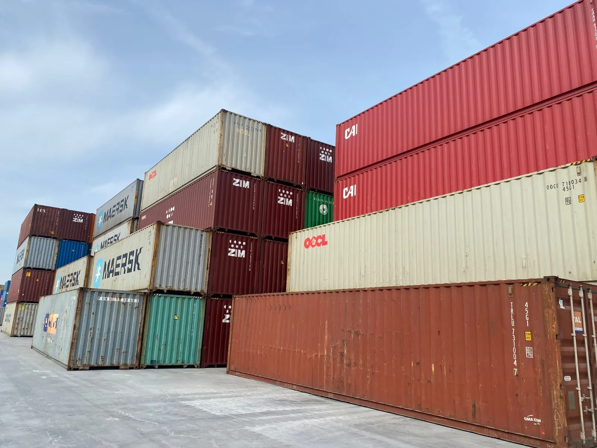
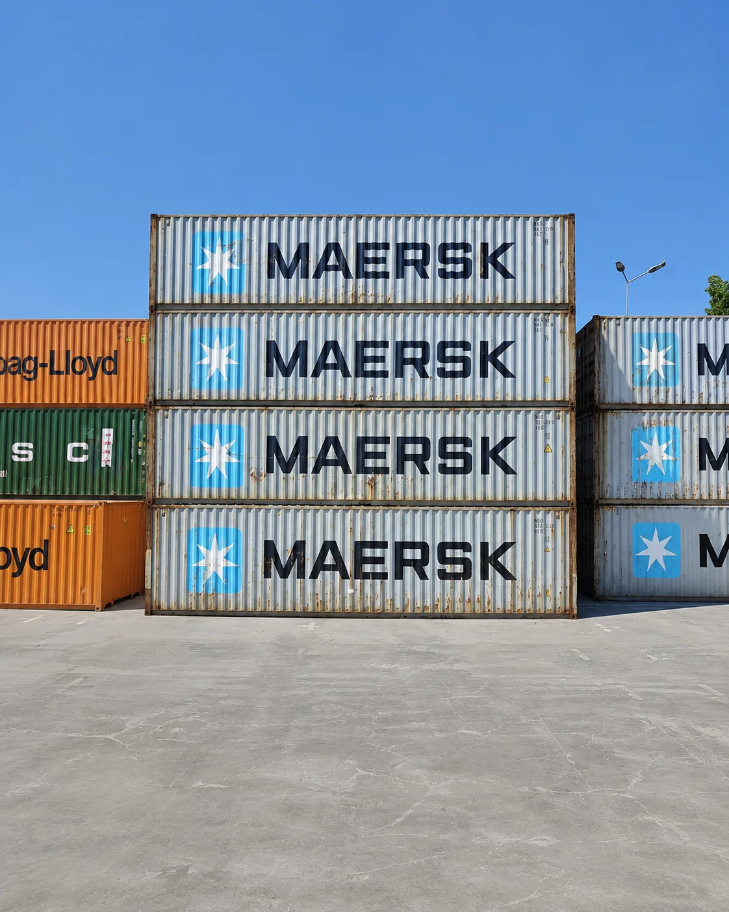

Container maritim de 40', tip Dry Van, cu uzură vizibilă din serviciu activ — lovituri, rugină superficială, podea uzată. Dimensiuni standard identice cu varianta nouă, preț semnificativ mai mic.

Containerul maritim 40' second hand respectă standardele ISO 42G1 ca dimensiuni și capacitate brută. Starea structurală și estetică variază în funcție de gradul comercial (Cargo-Worthy sau Wind & Watertight) și de istoria containerului.
Containerele second hand se comercializează în două grade principale, cu drepturi de utilizare și certificări diferite. Alegerea depinde de scopul tău — transport sau depozitare statică.
Containerul a trecut o inspecție structurală de terță parte și deține o plăcuță CSC (Convention for Safe Containers) valabilă. Poate fi utilizat în transport maritim intermodal, ridicat din colțare, stivuit încărcat.
Containerul este etanș la vânt și apă în condiții normale, dar nu mai deține plăcuță CSC și nu este certificat pentru transport maritim internațional. Destinat exclusiv utilizărilor statice.

Uzură normală · Structură solidăMateriale de construcții, scule, echipamente — acolo unde aspectul exterior nu contează, dar robustețea da.
Doar pentru gradul Cargo-Worthy cu plăcuță CSC valabilă. Verifică data de reinspecție înainte de a-l folosi în transport maritim.
Atelier, arhivă, spațiu tehnic sau depozit permanent — structura solidă permite modificări fără costuri suplimentare față de varianta nouă.
Diferența față de varianta nouă sau one-trip este substanțială, la aceleași dimensiuni și capacitate de volum.
A supraviețuit ani de serviciu maritim activ. Oțelul naval rezistă decenii dacă structura este intactă și nu există perforații.
Stocul de containere SH este de regulă mai mare, cu timpi de livrare mai scurți față de variantele noi sau produse la comandă.
Un container second hand se vinde în starea în care se află. Inspecția fizică înainte de livrare este esențială — mai ales pentru gradul WWT, unde nu există certificare terță parte.
Ce trebuie știut despre un container second hand înainte de comandă.
Curățare, grunduire anticorozivă și vopsire în culoare RAL — acoperă uzura vizibilă și prelungește durata de viață.
Cutie lacăt, sistem de securizare, ușă pietonală laterală, ferestre sau compartimentări interioare.
Instalație electrică și iluminat, realizate doar prin proiectare și execuție dedicată, cu respectarea normativelor în vigoare.
Spune-ne gradul de care ai nevoie — Cargo-Worthy sau Wind & Watertight — și îți pregătim oferta în maximum 24 de ore, cu disponibilitate, transport și opțiuni de personalizare.